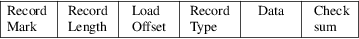
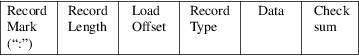
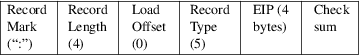
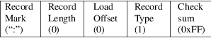

srec_intel16 - Intel Hexadecimal 16-bit file format specification
This format is also known as the INHX16 format.
This document describes the hexadecimal object file format for 16-bit microprocessors.
This format is very similar to the srec_intel(5) format, except that the addresses are word addresses. The count field is a word count.
The hexadecimal representation of binary is coded in ASCII alphanumeric characters. For example, the 8-bit binary value 0011-1111 is 3F in hexadecimal. To code this in ASCII, one 8-bit byte containing the ASCII code for the character ’3’ (0011-0011 or 0x33) and one 8-bit byte containing the) ASCII code for the character ’F’ (0100-0110 or 0x46) are required. For each byte value, the high-order hexadecimal digit is always the first digit of the pair of hexadecimal digits. This representation (ASCII hexadecimal) requires twice as many bytes as the binary representation.
A hexadecimal object file is blocked into records, each of which contains the record type, length, memory load address and checksum in addition to the data. There are currently six (6) different types of records that are defined, not all combinations of these records are meaningful, however. The record are:
|
• |
Data Record |
|||
|
• |
End of File Record |
|||
|
• |
Extended Segment Address Record |
|||
|
• |
Start Segment Address Record |
|||
|
• |
Extended Linear Address Record |
|||
|
• |
Start Linear Address Record |
General Record Format

Record Mark.
Each record begins with a Record Mark field containing 0x3A, the ASCII code for the colon (“:”) character.
Record Length
Each record has a Record Length field which specifies the number of 16-bit words of information or data which follows the Record Type field of the record. This field is one byte, represented as two hexadecimal characters. The maximum value of the Record Length field is hexadecimal ’FF’ or 255.
Load Offset
Each record has a Load Offset field which specifies the 16-bit starting load offset of the data words, therefore this field is only used for Data Records (if the words are loaded as bytes, the address needs to be doubled). In other records where this field is not used, it should be coded as four ASCII zero characters (“0000” or 0x30303030). This field one 16-bit word, represented as four hexadecimal characters.
Record Type
Each record has a Record Type field which specifies the record type of this record. The Record Type field is used to interpret the remaining information within the record. This field is one byte, represented as two hexadecimal characters. The encoding for all the current record types are:
|
0 |
Data Record |
|||
|
1 |
End of File Record |
|||
|
5 |
Execution Start Address Record |
|||
|
Data |
Each record has a variable length Data field, it consists of zero or more 16-bit words encoded as set of 4 hexadecimal digits, most significant digit first. The interpretation of this field depends on the Record Type field.
Checksum
Each record ends with a Checksum field that contains the ASCII hexadecimal representation of the two’s complement of the 8-bit bytes that result from converting each pair of ASCII hexadecimal digits to one byte of binary, from and including the Record Length field to and including the last byte of the Data field. Therefore, the sum of all the ASCII pairs in a record after converting to binary, from the Record Length field to and including the Checksum field, is zero.
Data
Record
(8-, 16- or 32-bit formats)

The Data Record provides a set of hexadecimal digits that represent the ASCII code for data bytes that make up a portion of a memory image.
The contents of
the individual fields within the record are:
Record Mark
This field contains 0x3A, the hexadecimal encoding of the ASCII colon (“:”) character.
Record Length
The field contains two ASCII hexadecimal digits that specify the number of 16-bit data words in the record. The maximum value is 255 decimal.
Load Offset
This field contains four ASCII hexadecimal digits representing the word address at which the first word of the data is to be placed. (For an exquivalent bytes address, double it.)
Record Type
This field contains 0x3030, the hexadecimal encoding of the ASCII character “00”, which specifies the record type to be a Data Record.
|
Data |
This field contains sets of four ASCII hexadecimal digits, one set for each 16-bit data word, most significant digit first. |
Checksum
This field contains the check sum on the Record Length, Load Offset, Record Type, and Data fields.
Execution Start Address Record

The Execution Start Address Record is used to specify the execution start address for the object file. This is where the loader is to jump to begin execution once the hex load is complete.
The Execution Start Address Record can appear anywhere in a hexadecimal object file. If such a record is not present in a hexadecimal object file, a loader is free to assign a default execution start address.
The contents of
the individual fields within the record are:
Record mark
This field contains 0x3A, the hexadecimal encoding of the ASCII colon (“:”) character.
Record length
The field contains 0x3032, the hexadecimal encoding of the ASCII characters “02”, which is the length, in bytes, of the EIP register content within this record.
Load Offset
This field contains 0x30303030, the hexadecimal encoding of the ASCII characters “0000”, since this field is not used for this record.
Record Type
This field contains 0x3035, the hexadecimal encoding of the ASCII character “05”, which specifies the record type to be a Start Address Record.
|
EIP |
This field contains eight ASCII hexadecimal digits that specify the address. The field is encoded big-endian (most significant digit first). |
Checksum
This field contains the check sum on the Record length, Load Offset, Record Type, and EIP fields.
End of File
Record
This shall be the last record in the file.

The End of File Record specifies the end of the hexadecimal object file.
The contents of
the individual fields within the record are:
Record mark
This field contains 0x3A, the hexadecimal encoding of the ASCII colon (“:”) character.
Record Length
The field contains 0x3030, the hexadecimal encoding of the ASCII characters “00”. Since this record does not contain any Data bytes, the length is zero.
Load Offset
This field contains 0x30303030, the hexadecimal encoding of the ASCII characters “0000”, since this field is not used for this record.
Record Type
This field contains 0x3031, the hexadecimal encoding of the ASCII character “01”, which specifies the record type to be an End of File Record.
Checksum
This field contains the check sum an the Record Length, Load Offset, and Record Type fields. Since all the fields are static, the check sum can also be calculated statically, and the value is 0x4646, the hexadecimal encoding of the ASCII characters “FF”.
Size
Multiplier
In general, binary data will expand in sized by
approximately 2.3 times when represented with this
format.
Here is an example INHX16 file. It contains the data “Hello, World” to be loaded at address 0.
:0700000065486C6C2C6F5720726F646CFF0AA8
:00000001FF
srec_cat
version 1.65
Copyright (C) 1998, 1999, 2000, 2001, 2002, 2003, 2004,
2005, 2006, 2007, 2008, 2009, 2010, 2011, 2012, 2013, 2014,
2018, 2019, 2022 Peter Miller
The srec_cat program comes with ABSOLUTELY NO WARRANTY; for details use the ’srec_cat -VERSion License’ command. This is free software and you are welcome to redistribute it under certain conditions; for details use the ’srec_cat -VERSion License’ command.